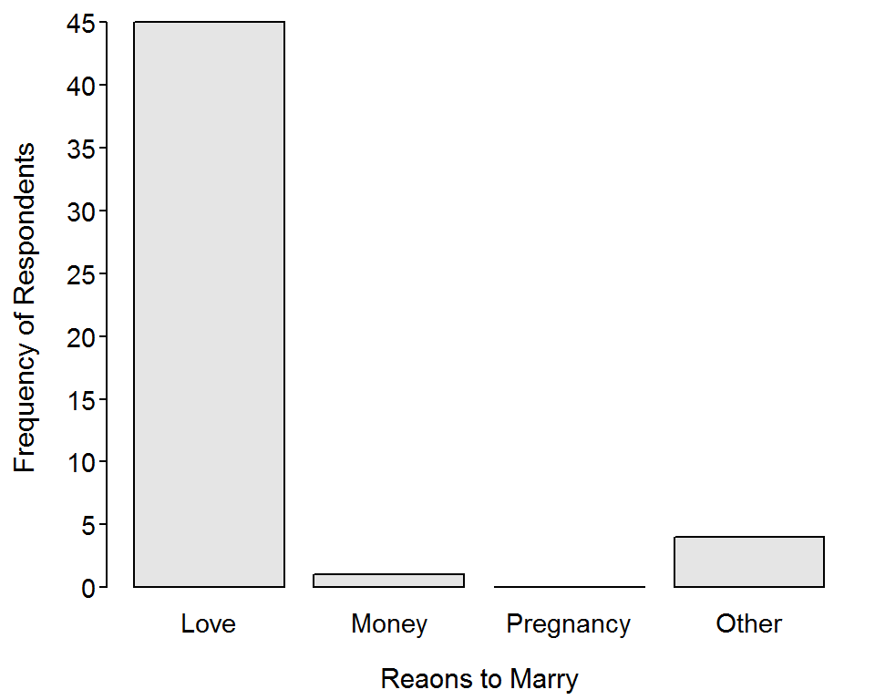
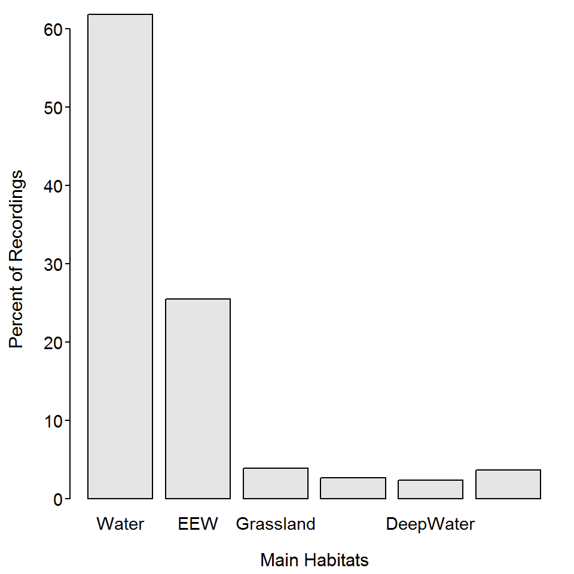

Hand Calculations
 The breed that won the “Herding Group” at the Westminster Kennel Club championships are listed here. Perform the following tasks with those data.
The breed that won the “Herding Group” at the Westminster Kennel Club championships are listed here. Perform the following tasks with those data.
- Construct a table that shows the frequency of breeds won the group.
- Construct a table that shows the percentage by breed that won the group.
- Hand draw (roughly) a bar chart of your results.
- Hand draw (roughly) a pie chart of your results.
Bar Chart I
 A Northland College student asked 50 of her peers “Why should people get married (Select Love, Money, Pregnancy, or Other)?” Her resutls are shown in the bar chart below. Use this information to answer the questions further below.
A Northland College student asked 50 of her peers “Why should people get married (Select Love, Money, Pregnancy, or Other)?” Her resutls are shown in the bar chart below. Use this information to answer the questions further below.

- What is an individual in this example?
- What type of variable is recorded?
- Construct a frequency table from this bar chart.
- Construct a percentage table from this bar chart.
Bar Chart II
 King et al. (2013) examined the habitat use of Brown Pelicans (Pelecanus occidentalis) in the Northern Gulf of Mexico. The bar chart below show the percentage of GPS locations recorded for the sample of Brown Pelicans in major habitats. Use this information to answer the questions further below. [Note that
King et al. (2013) examined the habitat use of Brown Pelicans (Pelecanus occidentalis) in the Northern Gulf of Mexico. The bar chart below show the percentage of GPS locations recorded for the sample of Brown Pelicans in major habitats. Use this information to answer the questions further below. [Note that Water=“shallow near-shore waters”, EEW=“estuarine emergent wetland”, Grassland=“shoreline grasslands”, UnShore=“unconsolidated shore”, DeepWater=“deeper offshore waters”, and Other=“all other habitats”.]

- What is an individual in this example?
- What type of variable is recorded?
- What (approximate) percentage of individuals used “shallow nearshore waters”?
- What (approximate) percentage of individuals used “estuaring emegerent wetlands”?
- What (approximate) percentate of individuals were not in the two most common habitat types?
- What is the shape of this distribution?
Coarse Woody Debris
 Coarse woody debris (CWD) in lakes is important for aquatic systems as it provides refuge for young fish and invertebrates as well as providing areas for periphyton to grow. Coarse woody debris was studied in the north basin of Allequash Lake in northern Wisconsin. Among other things, the researchers recorded the diameter (cm) of CWD found in the lake littoral zone and a qualitative measure of the degree to which the location where the CWD was found was exposed to winds (low or medium). The data (sampled from information on the North Temperate Lakes Long Term Ecological Research website) they observed are shown below.
Coarse woody debris (CWD) in lakes is important for aquatic systems as it provides refuge for young fish and invertebrates as well as providing areas for periphyton to grow. Coarse woody debris was studied in the north basin of Allequash Lake in northern Wisconsin. Among other things, the researchers recorded the diameter (cm) of CWD found in the lake littoral zone and a qualitative measure of the degree to which the location where the CWD was found was exposed to winds (low or medium). The data (sampled from information on the North Temperate Lakes Long Term Ecological Research website) they observed are shown below.
diameter 21 15 18 23 18 17 19 17 15 22 16 20 16 17 18 15 16 24 24 23
exposure med med med low med low med med med med med med low med med med med low med med
diameter 18 17 19 17 17 15 17 18 19 31 25 15 17 34 16 18 19 15 16 15
exposure med med med med med med med med low med med med med low low med med med low med
diameter 20 23 34 20 17 20 15 34 18 24
exposure med med low med med med med med med med
Enter the data into Excel, save as a CSV, and load the data into R. [HINT: these are the same data that you entered in a previous class exercise. Use that file and recycle the portion of that R script that you used to load the data.] Use this information to answer the following questions.
- Perform a univariate EDA for
exposure.
Popularity in Middle School
 Chase and Drummer (1992) examined sports as a social status determinant for children. In their study, they surveyed 227 boys and 251 girls in grades 4, 5, and 6 from schools in Michigan to determine which criteria were most important in determining personal, female, and male popularity. In two parts of their study, students were asked what their personal goals were for school (options were “make good grades”, “be popular”, and “be good in sports”;
Chase and Drummer (1992) examined sports as a social status determinant for children. In their study, they surveyed 227 boys and 251 girls in grades 4, 5, and 6 from schools in Michigan to determine which criteria were most important in determining personal, female, and male popularity. In two parts of their study, students were asked what their personal goals were for school (options were “make good grades”, “be popular”, and “be good in sports”; goals) and to rank the importance that “being good in sports” is in defining popularity (1=“most important”-4=“least important”; sports). These data (and answers to several other questions) are in PopularKids.csv. Use these data to answer the following questions.
- Perform a univariate EDA for
goals.
- Perform a univariate EDA for
sports.
- Perform a univariate EDA for
type of school. Does this suggest anything about the way that students were sampled?